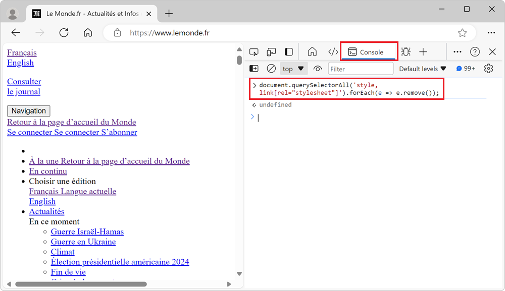

27 Testing tips
-
Override source files to test changes in the browser
It can be helpful to make quick changes to the source code that a site uses, especially when debugging a site in production. For example, if you suspect that a bug is caused by a specific line of code... Read more
-
Override HTTP response headers
 With DevTools, you can override the response headers of a network request and test your website under different conditions. HTTP response headers are metadata sent by the server to the browser, along... Read more
With DevTools, you can override the response headers of a network request and test your website under different conditions. HTTP response headers are metadata sent by the server to the browser, along... Read more -
Disable all CSS styles on the page

To remove all CSS styles on a webpage, for example to test the accessibility of a page when styles are disabled, or to verify the order in which content is displayed, you can use the techniques below.... Read more
-
See the viewport size
 The size of the viewport that's used to render a webpage in a browser can be very important at times, such as when creating or debugging media queries. You can easily know what the current size of the... Read more
The size of the viewport that's used to render a webpage in a browser can be very important at times, such as when creating or debugging media queries. You can easily know what the current size of the... Read more -
Check if a website uses third-party cookies
 Cookies are small files that websites save on your computer when you visit them. Websites often use cookies to remember things about your last visit. For example, a weather website can use cookies to... Read more
Cookies are small files that websites save on your computer when you visit them. Websites often use cookies to remember things about your last visit. For example, a weather website can use cookies to... Read more -
Find all elements with a specific style
 Let's say you want to list all of the elements on a page that are absolutely positioned. Or maybe you want to find all of the elements that use CSS grid. How would you do that? One way is to run a few... Read more
Let's say you want to list all of the elements on a page that are absolutely positioned. Or maybe you want to find all of the elements that use CSS grid. How would you do that? One way is to run a few... Read more -
Debug your print CSS styles by simulating print media
 If you work on a webpage that's supposed to be printed, you probably want to test your print CSS styles. You can use your browser's print preview of course, but what if you need to debug the CSS? DevT... Read more
If you work on a webpage that's supposed to be printed, you probably want to test your print CSS styles. You can use your browser's print preview of course, but what if you need to debug the CSS? DevT... Read more -
Find broken links
 The link to X on page Y doesn't work is probably a bug report you've received at some point. But how do you find these broken links before someone else does? In Polypane, the Outline Panel will show y... Read moreCategories: Supported by:
The link to X on page Y doesn't work is probably a bug report you've received at some point. But how do you find these broken links before someone else does? In Polypane, the Outline Panel will show y... Read moreCategories: Supported by: -
Emulate color schemes
 In CSS, you can use the prefers-color-scheme media feature (docs) to detect if the user prefers using a light or a dark theme in their operating system. This is useful to style your website in a way t... Read more
In CSS, you can use the prefers-color-scheme media feature (docs) to detect if the user prefers using a light or a dark theme in their operating system. This is useful to style your website in a way t... Read more -
Simulate multiple devices that are kept in sync
 Instead of simulating devices one by one and switching between them, Polypane supports testing on multiple simulated devices and viewports at the same time. It lets you test different simulated device... Read moreCategories: Supported by:
Instead of simulating devices one by one and switching between them, Polypane supports testing on multiple simulated devices and viewports at the same time. It lets you test different simulated device... Read moreCategories: Supported by: -
Show web vitals
 Web vitals are a set of metrics that help you determine how well-built your page is. You can learn more about them here. These scores can be obtained with various online checks like PageSpeed Insights... Read moreCategories: Supported by:
Web vitals are a set of metrics that help you determine how well-built your page is. You can learn more about them here. These scores can be obtained with various online checks like PageSpeed Insights... Read moreCategories: Supported by: -
Autofill forms for testing
 In Polypane you can right-click any form on the page and select Autofill form to add dummy values to all input elements. This prevents you from having to go field-by-field to fill in all required fiel... Read moreCategories: Supported by:
In Polypane you can right-click any form on the page and select Autofill form to add dummy values to all input elements. This prevents you from having to go field-by-field to fill in all required fiel... Read moreCategories: Supported by: -
Test your PWA protocol handlers
 Progressive Web Apps (PWA) can register themselves to handle URIs with pre-defined or custom protocols (such as mailto, geo, or web+foo). This is a great capability that makes it possible for installe... Read more
Progressive Web Apps (PWA) can register themselves to handle URIs with pre-defined or custom protocols (such as mailto, geo, or web+foo). This is a great capability that makes it possible for installe... Read more -
Emulate idle detection states
 The Idle Detection API is useful for web developers to detect when the user isn't interacting with their device. This can be useful for chat applications, for example, to mark the user as away. Note:... Read moreCategories: Supported by:
The Idle Detection API is useful for web developers to detect when the user isn't interacting with their device. This can be useful for chat applications, for example, to mark the user as away. Note:... Read moreCategories: Supported by: -
Simulate different devices and screen sizes
 All browser DevTools have a built-in mode that you can use to test a webpage under different screen sizes and device capabilities. As a web developer, it is very important to realize that your website... Read more
All browser DevTools have a built-in mode that you can use to test a webpage under different screen sizes and device capabilities. As a web developer, it is very important to realize that your website... Read more -
Simulate a different latitude/longitude geolocation
 If your website has features that depend on the geographic location of your users, you can test these features by simulating different geolocations right from DevTools! Chrome and Edge DevTools have a... Read more
If your website has features that depend on the geographic location of your users, you can test these features by simulating different geolocations right from DevTools! Chrome and Edge DevTools have a... Read more -
Copy an element's JavaScript path
 JavaScript often needs references to DOM nodes on the page. Getting a reference is sometimes easy with document.getElementById() or similar. Other times however, a more complicated CSS selector needs... Read more
JavaScript often needs references to DOM nodes on the page. Getting a reference is sometimes easy with document.getElementById() or similar. Other times however, a more complicated CSS selector needs... Read more -
Empty the cache and hard refresh
 Here is a nice tip to quickly empty your cache and refresh the page, in order to test new code changes: In Chrome, or Edge, open DevTools (F12). This step is not needed for Polypane. Right-click on t... Read more
Here is a nice tip to quickly empty your cache and refresh the page, in order to test new code changes: In Chrome, or Edge, open DevTools (F12). This step is not needed for Polypane. Right-click on t... Read more -
Create your own simulated devices
 You can simulate various different devices from DevTools, to get an idea of how your webpage might render on those devices (note that this is only a simulation, the tool only changes the screen dimens... Read more
You can simulate various different devices from DevTools, to get an idea of how your webpage might render on those devices (note that this is only a simulation, the tool only changes the screen dimens... Read more -
Use document.designMode to spell check your webpage
 Amelia Bellamy-Royds shared a really cool tip to spell-check a webpage's content from DevTools: Open DevTools, and go to the Console tool. Type document.designMode = "on" and press Enter. C... Read more
Amelia Bellamy-Royds shared a really cool tip to spell-check a webpage's content from DevTools: Open DevTools, and go to the Console tool. Type document.designMode = "on" and press Enter. C... Read more -
Automatically get issues your site has with performance, accessibility, security, compatibility, and others.
 Edge has a very useful Issues panel that can automatically list a lot of different issues with your site. It can detect common issues related to browser compatibility, accessibility, performance, secu... Read moreCategories: Supported by:
Edge has a very useful Issues panel that can automatically list a lot of different issues with your site. It can detect common issues related to browser compatibility, accessibility, performance, secu... Read moreCategories: Supported by: -
Start your HTML and CSS prototypes in the browser directly
 Sometimes I need a blank canvas to prototype an idea with HTML and CSS. Something outside of the website I'm working on. Maybe I need a new layout or component and I'm not sure yet how to do it. In th... Read more
Sometimes I need a blank canvas to prototype an idea with HTML and CSS. Something outside of the website I'm working on. Maybe I need a new layout or component and I'm not sure yet how to do it. In th... Read more -
Use full browser window for device emulation
 Emulating different devices in the browser is incredibly useful. It gets tricky when you are on a device with limited resolution as the emulated device needs to be zoomed down to fit the screen as a l... Read more
Emulating different devices in the browser is incredibly useful. It gets tricky when you are on a device with limited resolution as the emulated device needs to be zoomed down to fit the screen as a l... Read more -
Record and replay user flows
 Sometimes, you need to repeatedly test the same user scenario on a website. This can happen when working on a fix or a performance improvement. Testing the same user scenario over and over again requi... Read more
Sometimes, you need to repeatedly test the same user scenario on a website. This can happen when working on a fix or a performance improvement. Testing the same user scenario over and over again requi... Read more -
Evaluate XPath to find elements in the page
 DevTools supports 2 ways to evaluate XPath expressions to help you locate elements in the page. All browsers support those 2 ways: From the Elements (or Inspector) panel: Click anywhere in the panel... Read more
DevTools supports 2 ways to evaluate XPath expressions to help you locate elements in the page. All browsers support those 2 ways: From the Elements (or Inspector) panel: Click anywhere in the panel... Read more -
Block resources to test your site without CSS or JavaScript
 The various resources loaded by your site aren't always guaranteed to reach your users when they visit your site. Network problems can occur, JavaScript may be disabled, a CDN may be down, or the brow... Read more
The various resources loaded by your site aren't always guaranteed to reach your users when they visit your site. Network problems can occur, JavaScript may be disabled, a CDN may be down, or the brow... Read more -
Copy an element's XPath expression
 You can easily copy an element's XPath expression from DevTools. This is useful if you need this expression for an automated test for example. Go to the Elements (or Inspector) panel Use the context-... Read more
You can easily copy an element's XPath expression from DevTools. This is useful if you need this expression for an automated test for example. Go to the Elements (or Inspector) panel Use the context-... Read more
 edge
edge
 chrome
chrome
 firefox
firefox
 safari
safari
 polypane
polypane